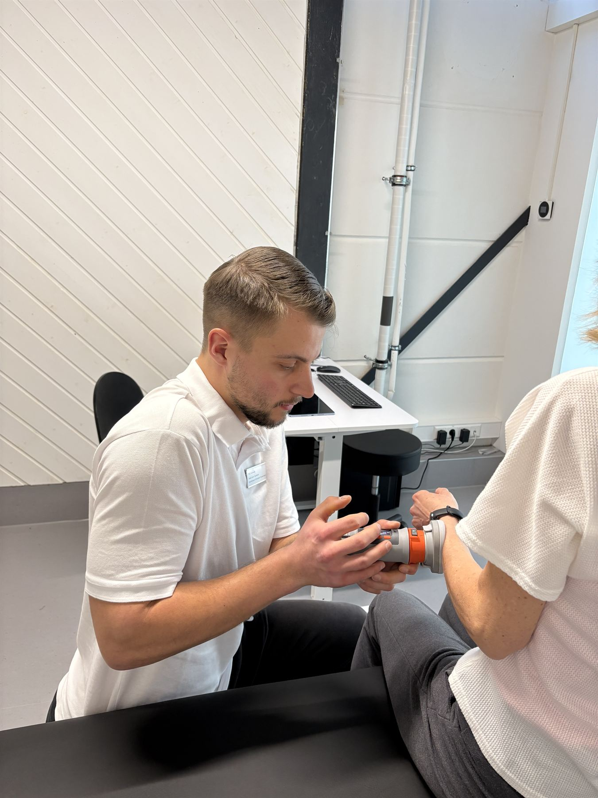
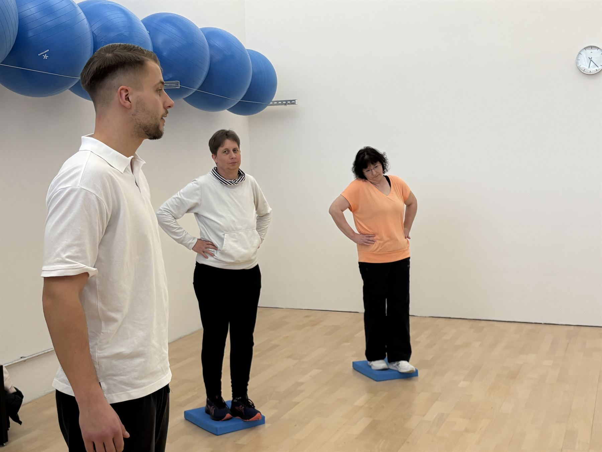

Kurse diese Woche
Ohne Mitgliedschaft: 10er-Kurskarte für 150 €
Sie kennen die Ersttestung.
Für Termine bis zum 15. Dezember kostet sie 59,90 € statt 80 €. Wir messen Kraft, Beweglichkeit und Gleichgewicht, besprechen die Ergebnisse und geben einen Ausdruck mit.
Offener Samstag
Partner, Eltern, Nachbarn oder Freunde können an diesem Vormittag einfach vorbeikommen und sehen, wie Sie hier trainieren.
Kurzmessung der Beinkraft
Im Sitzen, links und rechts im Vergleich. Das Ergebnis gibt es auf einer Karte zum Mitnehmen.
Squash ausprobieren
Schläger und Bälle stellen wir. Nach einer kurzen Einweisung geht es los.
Trainingsfläche kennenlernen
Kurz an ein Gerät setzen und ausprobieren, mit leichtem Gewicht und mit einem von uns daneben.
Gutscheine für Familie und Freunde
Mit dem Gutschein fängt die beschenkte Person bei uns mit einer Ersttestung an. Den Gutschein gibt es als Karte mit Umschlag.
| Ersttestung | 59,90 € |
| 10er-Karte Gerätetraininginklusive Ersttestung | 200 € |
Zwölf Wochen mit festem Plan
Sieben feste Termine, dazwischen trainieren Sie zweimal pro Woche, wann es Ihnen passt. Alle Kurse sind inklusive. Nach drei Monaten endet das Programm von selbst, eine Kündigung ist nicht nötig.
Was hat sich seit der Ersttestung getan?
Wir messen Kraft, Beweglichkeit, Gleichgewicht und Bewegungsablauf noch einmal und vergleichen die Werte mit Ihrer Ersttestung. Danach passen wir Ihren Trainingsplan an.
| Für Mitglieder | 60 € |
| Ohne Mitgliedschaft | 70 € |
Einzelsitzung mit einem Sporttherapeuten
Die ganze Zeit für Ihr Anliegen: zum Beispiel nach einer Verletzung oder Operation, bei Beschwerden im Alltag oder wenn Sie eine Übung sauber lernen möchten.
| Mitglieder | ohne Mitgliedschaft | |
|---|---|---|
| 30 Minuten | 40 € | 50 € |
| 60 Minuten | 80 € | 90 € |
Im Premium-Tarif sind alle drei Monate 30 Minuten inklusive.

Lust auf eine Runde Squash?
Drei Courts im Haus. Buchen am Empfang, telefonisch unter 07159 45151 oder online.
| 30 Minuten Court | |
|---|---|
| Mo–Fr 8 bis 13:30 Uhrund 16 bis 17 Uhr | 9 € |
| Mo–Fr 17 bis 21:30 Uhr | 15 € |
| Samstag 9 bis 13:30 Uhr | 12 € |

Rehasport in Magstadt
In kleinen Gruppen unter fachlicher Anleitung. Sie brauchen eine ärztliche Verordnung und die Genehmigung Ihrer Krankenkasse.
| Montag | 10 und 18 Uhr |
| Dienstag | 11 Uhr |
| Mittwoch | 10 Uhr |
| Donnerstag | 10 Uhr |
| Freitag | 11 und 18 Uhr |

Was andere über uns lesen, schreiben Sie.
Wer nach betreutem Training oder einem Squash-Court sucht, liest zuerst, was andere hier geschrieben haben. Ein paar Sätze von Ihnen helfen den Menschen, die noch überlegen.
Wir lesen jede Rückmeldung und antworten auf jede. Ganz freiwillig – und wenn Ihnen etwas nicht gefällt, schreiben Sie es bitte ebenso offen oder sprechen Sie uns direkt an.

Beim Rücken zählt, wie oft Sie trainieren.
Eine neue Auswertung vieler Studien zu langanhaltenden Rückenschmerzen zeigt: Wer dreimal pro Woche oder öfter trainiert, kommt auf lange Sicht im Alltag besser zurecht als mit weniger Einheiten. Die Häufigkeit war dabei der deutlichste Faktor.
Was den Knochen guttut
124 Studien mit über 18.000 Teilnehmenden, ausgewertet im British Medical Journal: Die Knochendichte profitierte vor allem von zügigem Gehen oder Joggen und von Ausdauer- und Krafttraining in Kombination.
Kniearthrose: mittlere Gewichte, dafür dranbleiben
Eine Auswertung zum Krafttraining bei Kniearthrose kommt zu dem Ergebnis: Mittlere Gewichte schnitten besser ab als schwere. Kraft und Alltag verbesserten sich früh. Bei den Schmerzen brauchte es deutlich mehr Training über längere Zeit.
Training senkt das Sturzrisiko im Alter.
Übungen für Gleichgewicht und Kraft senken bei älteren Menschen, die zu Hause leben, die Zahl der Stürze um fast ein Viertel. Das ist eines der am besten belegten Ergebnisse der Bewegungsforschung.
Bewegungshäppchen: kurz, aber über den Tag verteilt
Mehrere kurze Übungsblöcke am Tag statt einer langen Einheit: Bei Kniearthrose haben solche „Exercise Snacks“ in Studien Schmerz und Beweglichkeit kurzfristig deutlich verbessert. Wie lange die Wirkung anhält, ist noch offen.
und oft
Erst einstellen, dann trainieren
Ein gut eingestelltes Gerät führt die Bewegung so, wie sie gedacht ist. Das dauert eine halbe Minute und lohnt sich bei jeder Übung.
- Drehpunkt des Geräts auf Höhe des Gelenksbeim Beinstrecker zum Beispiel auf Höhe des Knies
- Rücken an der Lehne, Füße fest am Boden
- Polster so, dass nichts drückt oder rutscht
Atmen nicht vergessen
Viele halten bei der Anstrengung unbewusst die Luft an. Dabei steigt der Druck im Körper unnötig stark an.
- Bei der Anstrengung ausatmen
- Beim Zurückführen einatmen
- Gleichmäßig weiteratmenauch bei der letzten, schweren Wiederholung
Ruhig und kontrolliert
Langsame Wiederholungen fordern den Muskel mehr als schnelle und schonen die Gelenke.
- Etwa 2 Sekunden in die Anstrengung
- 2 bis 3 Sekunden zurück
- Kein Schwung, kein Abfedernam Umkehrpunkt kurz die Spannung halten
Beinpresse und Kniebeuge
Die Beine tragen Sie durch den ganzen Alltag: Treppen, Aufstehen, Einkaufen. Hier lohnt sich saubere Technik besonders.
- Knie zeigen in Richtung der Fußspitzen
- Die ganze Fußsohle bleibt auf der PlatteDruck über die Fersen
- Oben die Knie nicht ganz durchdrücken
Rudern und Latzug
Bei Zugübungen arbeitet der obere Rücken. Das gelingt nur, wenn die Schulterblätter mitmachen.
- Erst die Schulterblätter nach hinten unten ziehendann die Arme beugen
- Schultern weg von den Ohren
- Oberkörper ruhig und aufrecht
Heben vom Boden
Ob Hantel im Funktionalbereich oder Getränkekiste zu Hause: Die Technik ist dieselbe.
- Aus der Hüfte beugen, Rücken lang
- Gewicht nah am Körper
- Aus den Beinen hochdrückennicht aus dem Rücken ziehen
Ziehen ja, Stechen nein
Training darf anstrengend sein. Ihr Körper sagt Ihnen aber deutlich, wo die Grenze liegt.
- Ein Ziehen oder Brennen im Muskel ist normal
- Stechender Schmerz im Gelenk ist ein Stoppsignal
- Dann aufhören und uns ansprechenwir passen die Übung an
Quark mit Beeren und Haferflocken
Quark mit der Milch cremig rühren. Beeren, Haferflocken und Nüsse darübergeben, fertig. Tiefgekühlte Beeren am Vorabend in den Kühlschrank stellen.
- 250 gMagerquark
- 3–4 ELMilch
- 150 gBeeren, auch tiefgekühlt
- 3 ELHaferflocken
- 1 ELgehackte Nüsse
- etwasZimt, nach Wunsch
Rote-Linsen-Suppe
Zwiebel und Karotte klein schneiden und im Öl andünsten. Linsen, Tomaten, Brühe und Kreuzkümmel dazugeben und 15 Minuten köcheln lassen. Pürieren und mit Zitrone, Salz und Pfeffer abschmecken.
- 200 grote Linsen
- 1Zwiebel
- 1Karotte
- 1 Dosestückige Tomaten
- 800 mlGemüsebrühe
- 1 TLKreuzkümmel
- 1 ELOlivenöl
- ½Zitrone, der Saft
Rührei mit Spinat
Den Spinat im Öl kurz zusammenfallen lassen. Die verquirlten Eier dazugeben und bei mittlerer Hitze stocken lassen. Mit halbierten Tomaten und dem Brot servieren.
- 3Eier
- 1 HandvollBabyspinat
- 4Kirschtomaten
- 1 ScheibeVollkornbrot
- 1 TLÖl, Salz, Pfeffer
Ofengemüse mit Kichererbsen und Feta
Ofen auf 200 Grad vorheizen. Gemüse in Stücke schneiden, mit Kichererbsen, Öl und Gewürzen mischen und 20 Minuten backen. Feta darüberbröseln und weitere 10 Minuten backen.
- 1 DoseKichererbsen, abgetropft
- 1rote Paprika
- 1Zucchini
- 1rote Zwiebel
- 150 gFeta
- 2 ELOlivenöl
- 1 TLPaprikapulver, Salz, Pfeffer
Hüttenkäse-Brot mit Radieschen
Radieschen in dünne Scheiben schneiden, Schnittlauch fein hacken. Hüttenkäse aufs Brot streichen, Radieschen und Schnittlauch darauf, mit Pfeffer würzen.
- 2 ScheibenVollkornbrot
- 200 gHüttenkäse
- 5Radieschen
- 1 BundSchnittlauch
- etwasSalz, Pfeffer